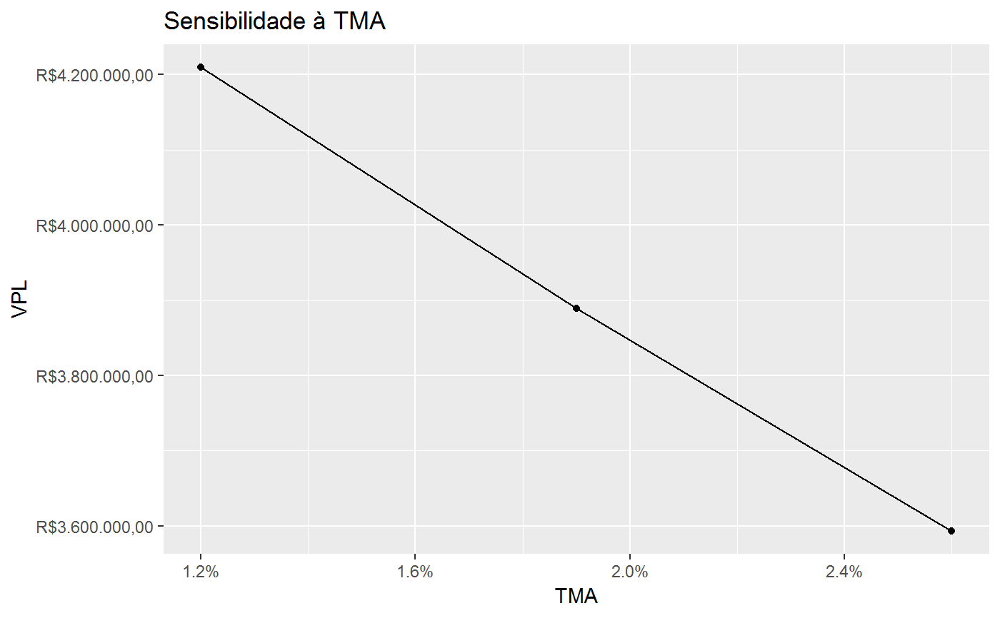
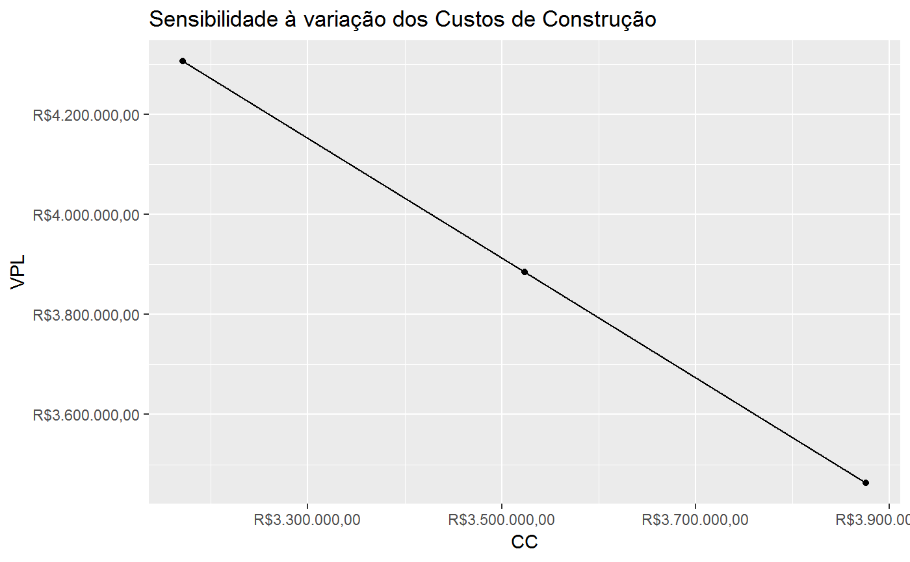
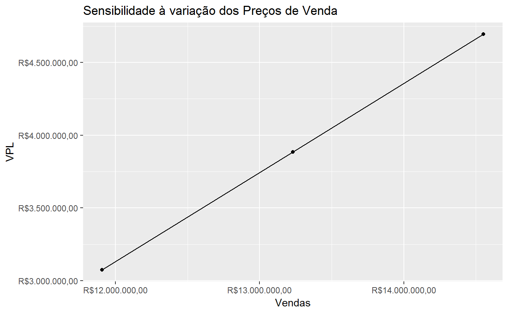
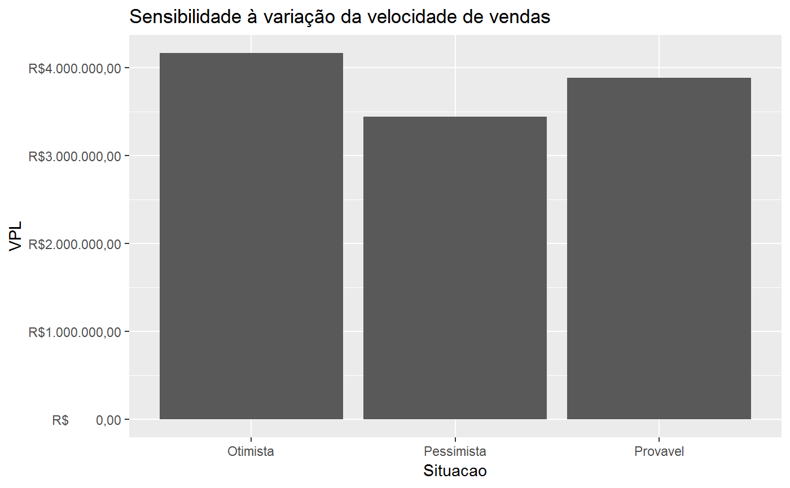
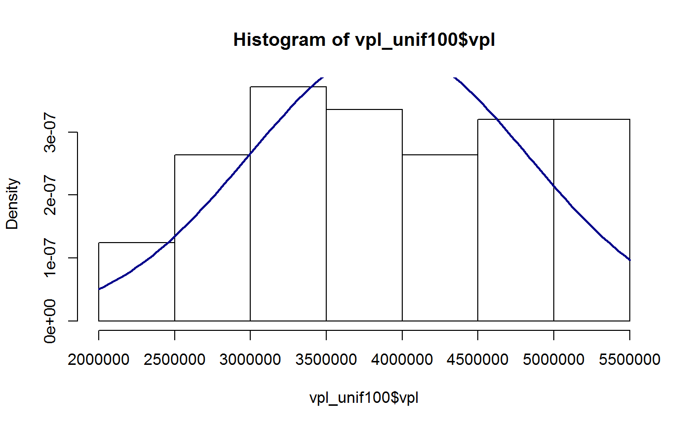
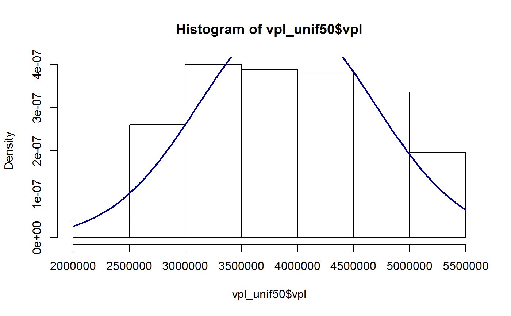
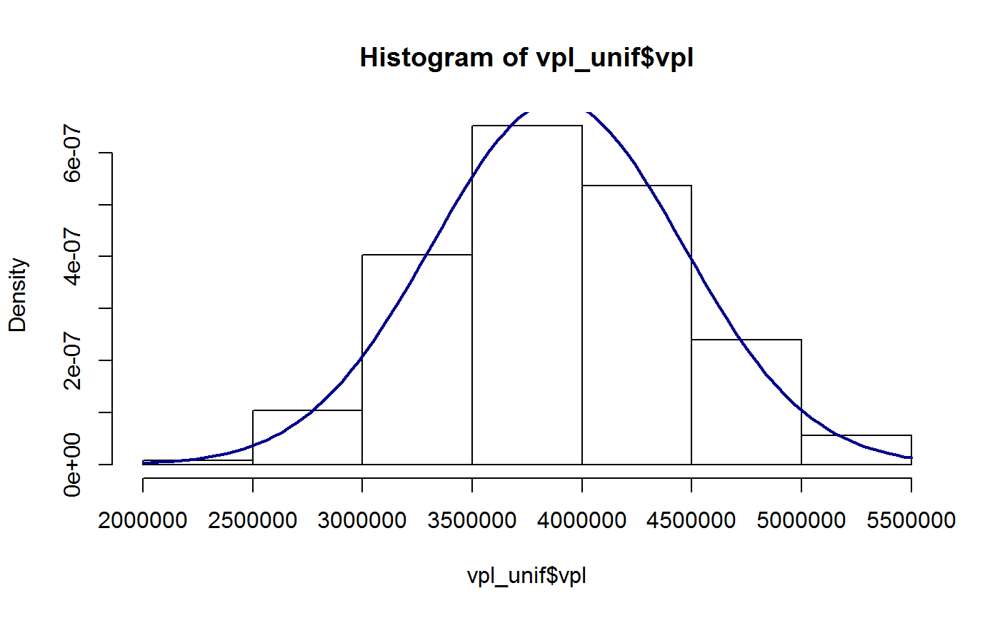
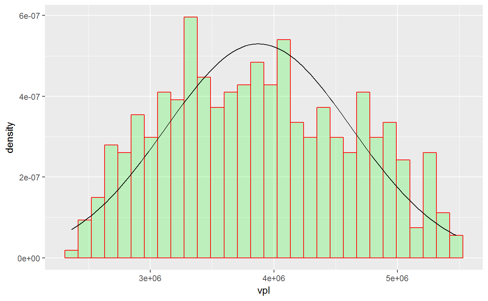

Real States appraisals based in the involutive method
Building Area
Overall Sales Value calculation
Investment cash flow
Sales Cash Flow
Net Cash Flow
Cash Flow table
Net Present Value
Sensibilidade aa TMA
Sensibilidade-custo do VPL
Sensibilidade-venda do VPL
Sensibilidade-BDI do Incorporador
Sensibilidade-BDI do Construtor
Sensibilidade-Fluxo de Vendas
Simulação com o Método de Monte Carlo
involutivo_estatico(vgv, cc, bdi_c, bdi_i, cor) AREA_CONSTRUIDA(area_terreno, IA, np) VGV(area_construida, valor_unitario) FCI(cc, wc, bdi_c, index = seq(0, length(wc) - 1)) FCV(vgv, wv, index = seq(0, length(wv) - 1)) FCL(fcv, fci, bdi_i, cor) FC(fcv, fci, bdi_i, cor, tma) VPL(fcl, tma) sensibilidade_tma(range, fcl) sensibilidade_custo(range, cc, wc, vgv, wv, bdi_i, bdi_c, cor, tma) sensibilidade_venda(range, cc, wc, vgv, wv, bdi_i, bdi_c, cor, tma) sensibilidade_bdi_i(range, cc, wc, vgv, wv, bdi_i, bdi_c, cor, tma) sensibilidade_bdi_c(range, cc, wc, vgv, wv, bdi_i, bdi_c, cor, tma) sensibilidade_vv(range, cc, wc, vgv, wv, bdi_i, bdi_c, cor, tma) vpl_sim(Nsim, ranges, variables, distribution = "uniform", params, dependencia = diag(length(ranges)))
| vgv | Overall Sales Value |
|---|---|
| cc | Constructions Costs |
| bdi_c | Constructors Budget Difference Income |
| bdi_i | Developers Budget Difference Income |
| cor | Brokerage fee |
| area_terreno | land area |
| IA | rate of land use |
| np | floors |
| area_construida | Building area (sq. meters) |
| valor_unitario | unit selling value ($/sq. meters) |
| wc | vector of weights of the total constructions costs over periods |
| index | a vector with the periods in which are made the expenses |
| wv | vector of weights of the total expected sales over periods |
| fcv | the expected sales cash flow |
| fci | the expected investment cash flow |
| tma | the attractiveness rate |
| fcl | the Net Cash Flow of the project |
| range | range of variation |
| Nsim | Número de simulações |
| ranges | Intervalos de variação de cada variável |
| variables | Variáveis utilizadas para o computo do VPL |
| distribution | Distribuição a priori a ser utilizada para gerar as variáveis |
| params | parâmtros a serem utilizados pelas distribuições a priori. |
| dependencia | matriz de covariância entre as variáveis |
the maximum building area
The Overall Sales Value
a vector containing the expected investment cash flow
a vector containing the expected sales cash flow
the expected Net Cash Flow
the net present value of the project
ac <- AREA_CONSTRUIDA(630, 2.5, 5) vgv <- VGV(20*94.5, 7000) wc <- c(5.67, 6.63, 7.24, 7.55, 10.76, 13.26, 14.72, 13.16, 14.18, 6.84)/100 bdi_c <- 31.46/100 cc <- 3523496.76 fci_provavel <- FCI(cc = cc, wc = wc, bdi_c = bdi_c) wv <- c(0, 0, 1, 1, 1, 1, 2, 2, 2, 2, 2, 2, 2, 2)/20 fcv_provavel <- FCV(vgv = vgv, wv = wv) bdi_i <- 23.5223/100 cor <- 5/100 fcl_provavel <- FCL(fcv_provavel, fci_provavel, bdi_i = bdi_i, cor = cor) tma <- 1.91/100 FC(fcv_provavel, fci_provavel, bdi_i = bdi_i, cor = cor, tma = tma)#> # A tibble: 14 x 8 #> Periodo FCV FCI Corretagem BDI_Incorporador FCL fator_VP #> <int> <dbl> <dbl> <dbl> <dbl> <dbl> <dbl> #> 1 0 0. -2.63e5 0 0 -2.63e5 1 #> 2 1 0. -3.07e5 0 0 -3.07e5 0.981 #> 3 2 6.62e5 -3.35e5 -33075 -155600. 1.37e5 0.963 #> 4 3 6.62e5 -3.50e5 -33075 -155600. 1.23e5 0.945 #> 5 4 6.62e5 -4.98e5 -33075 -155600. -2.56e4 0.927 #> 6 5 6.62e5 -6.14e5 -33075 -155600. -1.41e5 0.910 #> 7 6 1.32e6 -6.82e5 -66150 -311200. 2.64e5 0.893 #> 8 7 1.32e6 -6.10e5 -66150 -311200. 3.36e5 0.876 #> 9 8 1.32e6 -6.57e5 -66150 -311200. 2.89e5 0.860 #> 10 9 1.32e6 -3.17e5 -66150 -311200. 6.29e5 0.843 #> 11 10 1.32e6 0. -66150 -311200. 9.46e5 0.828 #> 12 11 1.32e6 0. -66150 -311200. 9.46e5 0.812 #> 13 12 1.32e6 0. -66150 -311200. 9.46e5 0.797 #> 14 13 1.32e6 0. -66150 -311200. 9.46e5 0.782 #> # ... with 1 more variable: FCL_descontado <dbl>vpl_provavel <- VPL(fcl_provavel, tma = tma) range_tma <- c(1.2, 2.6)/100 s_tma <- sensibilidade_tma(range_tma, fcl_provavel) s_tma#> # A tibble: 3 x 4 #> Situacao TMA VPL Variacao #> <chr> <dbl> <dbl> <dbl> #> 1 Pessimista 0.026 3593421. -0.0760 #> 2 Provavel 0.019 3888946. 0 #> 3 Otimista 0.012 4209472. 0.0824require(ggplot2)#>ggplot(s_tma, aes(x = TMA, y = VPL)) + geom_line() + geom_point() + scale_x_continuous(labels = scales::percent) + scale_y_continuous(labels = reais()) + labs(title = "Sensibilidade à TMA")range_custos <- c(.9, 1.1) s_custo <- sensibilidade_custo(range = range_custos, cc = cc, wc = wc, vgv = vgv, wv = wv, bdi_i = bdi_i, bdi_c = bdi_c, cor = cor, tma = tma) s_custo#> # A tibble: 3 x 4 #> Situacao CC VPL Variacao #> <chr> <dbl> <dbl> <dbl> #> 1 Pessimista 3171147. 4305807. 0.108 #> 2 Provavel 3523497. 3884554. 0 #> 3 Otimista 3875846. 3463300. -0.108ggplot(s_custo, aes(x = CC, y = VPL)) + geom_line() + geom_point() + scale_x_continuous(labels = reais()) + scale_y_continuous(labels = reais()) + labs(title = "Sensibilidade à variação dos Custos de Construção")range_vgv <- c(.9, 1.1) s_vgv <- sensibilidade_venda(range = range_vgv, cc = cc, wc = wc, vgv = vgv, wv = wv, bdi_i = bdi_i, bdi_c = bdi_c, cor = cor, tma = tma) s_vgv#> Situacao Vendas VPL Variacao #> 1 Pessimista 11907000 3074845 -0.2084432 #> 2 Provavel 13230000 3884554 0.0000000 #> 3 Otimista 14553000 4694262 0.2084432ggplot(s_vgv, aes(x = Vendas, y = VPL)) + geom_point() + geom_line() + scale_x_continuous(labels = reais()) + scale_y_continuous(labels = reais()) + labs(title = "Sensibilidade à variação dos Preços de Venda")range_bdi_i <- c(0.9, 1.1) s_bdi_i <- sensibilidade_bdi_i(range_bdi_i, cc = cc, wc = wc, vgv = vgv, wv = wv, bdi_i = bdi_i, bdi_c = bdi_c, cor = cor, tma = tma) s_bdi_i#> # A tibble: 3 x 4 #> Situacao BDI_Incorporador VPL Variacao #> <chr> <dbl> <dbl> <dbl> #> 1 Pessimista 0.259 3618090. -0.0686 #> 2 Provavel 0.235 3884554. 0 #> 3 Otimista 0.212 4151017. 0.0686range_bdi_c <- c(0.9, 1.1) s_bdi_c <- sensibilidade_bdi_c(range = range_bdi_c, cc = cc, wc = wc, vgv = vgv, wv = wv, bdi_i = bdi_i, bdi_c = bdi_c, cor = cor, tma = tma ) s_bdi_c#> # A tibble: 3 x 4 #> Situacao BDI_Construtor VPL Variacao #> <chr> <dbl> <dbl> <dbl> #> 1 Pessimista 0.346 3783742. -0.0260 #> 2 Provavel 0.315 3884554. 0 #> 3 Otimista 0.283 3985365. 0.0260wv_otimista <- c(0, 0, 2, 2, 2, 2, 2, 2, 2, 2, 2, 2)/20 wv_pessimista <- c(0, 0, 1, 1, 1, 1, 1, 1, 1, 1, 1, 1, 1, 1, 1, 1, 1, 1, 1, 1, 1, 1)/20 range_vv <- list(Pessimista = wv_pessimista, Provavel = wv, Otimista = wv_otimista) s_vv <- sensibilidade_vv(range_vv, cc = cc, wc = wc, vgv = vgv, bdi_i = bdi_i, bdi_c = bdi_c, cor = cor, tma = tma) s_vv#> # A tibble: 3 x 4 #> Situacao VV VPL Variacao #> <chr> <chr> <dbl> <dbl> #> 1 Pessimista Pessimista 3440235. -0.114 #> 2 Provavel Provavel 3884554. 0 #> 3 Otimista Otimista 4162031. 0.0714ggplot(s_vv, aes(x = Situacao, y = VPL)) + geom_col() + scale_y_continuous(labels = reais()) + labs(title = "Sensibilidade à variação da velocidade de vendas")## Simulacao de Monte Carlo com distribuição uniforme e dependencia total set.seed(1) ranges <- list(vgv = c(min = 0.9, max = 1.1), cc = c(min = 0.9, max = 1.1), bdi_i = c(min = 0.9, max = 1.1), bdi_c = c(min = 0.9, max = 1.1) ) variables <- list(vgv = vgv, wv = wv, cc = cc, wc = wc, bdi_i = bdi_i, bdi_c = bdi_c, cor = cor, tma = tma) dependencia100 <- matrix(data = c(1, -1, -1, -1, -1, 1, 1, 1, -1, 1, 1, 1, -1, 1, 1, 1), nrow = 4, byrow = TRUE, dimnames = list(names(ranges), names(ranges))) Nsim <- 500 vpl_unif100 <- vpl_sim(Nsim, ranges = ranges, variables = variables, distribution = "uniform", dependencia = dependencia100) m_unif100 <- mean(vpl_unif100$vpl) std_unif100 <- sd(vpl_unif100$vpl) hist(vpl_unif100$vpl, freq = FALSE)curve(dnorm(x, mean = m_unif100, sd = std_unif100), col = "darkblue", lwd = 2, add = TRUE, yaxt = "n")summary(vpl_unif100$vpl)#> Min. 1st Qu. Median Mean 3rd Qu. Max. #> 2306997 3144064 3837678 3907803 4691988 5499130# Its possible to compute the probabilities based in the simulations: mean(vpl_unif100$vpl < 0.85*m_unif100) # probability that VPL < 85% of the mean#> [1] 0.298# Or compute the probabilities based on the normal curve with mean and sd # equals to that of the simulation. pnorm(0.85*m_unif100, mean = m_unif100, sd = std_unif100)#> [1] 0.2621137## Simulacao de Monte Carlo com distribuição uniforme e dependencia 50% dependencia50 <- matrix(data = c(1, -.5, -.5, -.5, -.5, 1, .5, .5, -.5, .5, 1, .5, -.5, .5, .5, 1), nrow = 4, byrow = TRUE, dimnames = list(names(ranges), names(ranges))) vpl_unif50 <- vpl_sim(Nsim, ranges = ranges, variables = variables, distribution = "uniform", dependencia = dependencia50) m_unif50 <- mean(vpl_unif50$vpl) std_unif50 <- sd(vpl_unif50$vpl) hist(vpl_unif50$vpl, freq = FALSE)curve(dnorm(x, mean = m_unif50, sd = std_unif50), col = "darkblue", lwd = 2, add = TRUE, yaxt = "n")summary(vpl_unif50$vpl)#> Min. 1st Qu. Median Mean 3rd Qu. Max. #> 2340738 3278590 3884752 3905475 4539139 5407827## Simulacao de Monte Carlo com dist. uniforme e variáveis 100% independentes dependencia0 <- diag(4) dimnames(dependencia0) <- list(names(ranges), names(ranges)) vpl_unif <- vpl_sim(Nsim, ranges = ranges, variables = variables, distribution = "uniform", dependencia = dependencia0) m_unif <- mean(vpl_unif$vpl) std_unif <- sd(vpl_unif$vpl) hist(vpl_unif$vpl, freq = FALSE)curve(dnorm(x, mean = m_unif, sd = std_unif), col = "darkblue", lwd = 2, add = TRUE, yaxt = "n")summary(vpl_unif$vpl)#> Min. 1st Qu. Median Mean 3rd Qu. Max. #> 2462830 3491126 3878295 3887083 4308942 5271889## Simulacao de Monte Carlo com distribuição beta e dependencia 100% params <- list(vgv = c(shape1 = 2, shape2 = 2), cc = c(shape1 = 2, shape2 = 2), bdi_i = c(shape1 = 2, shape2 = 2), bdi_c = c(shape1 = 2, shape2 = 2) ) vpl_beta <- vpl_sim(Nsim, ranges = ranges, variables = variables, distribution = "beta", params = params, dependencia = dependencia100) m_beta <- mean(vpl_beta$vpl) std_beta <- sd(vpl_beta$vpl) ggplot(vpl_beta, aes(vpl)) + geom_histogram(aes(y =..density..), col="red", fill="green", alpha=.2) + stat_function( fun = dnorm, args = list(mean = m_beta, sd = std_beta) )#>